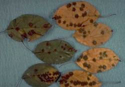
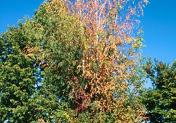
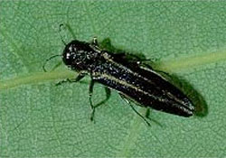
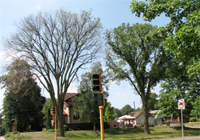
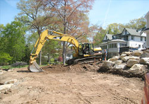
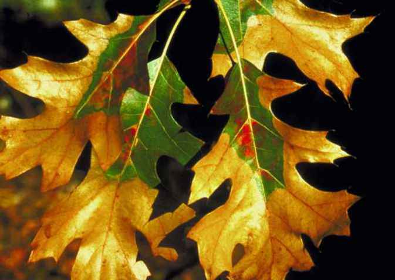
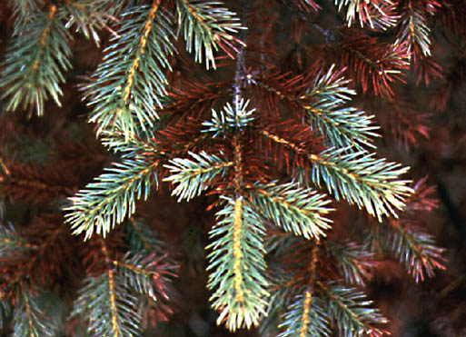
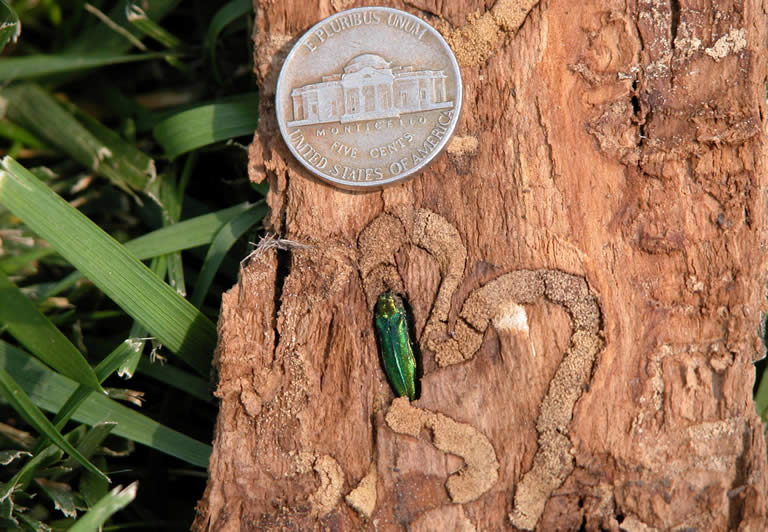

East Metro: 651.770.3744
West Metro: 952.881.3779
Wisconsin: 715.749.3475
- 1. Apple Scab
- 2. Bronze Birch Borer
- 3. Two Lined Chest Nut Borer
- 4. Dutch Elm Disease
- 5. Construction Damage
- 6. Oak Wilt
- 7. Rhizosphaera Needlecast
- 8. Emerald Ash Borer
1. Apple Scab
Download PDF
In late spring or early summer, foliage of several cultivars of flowering crabapple may become blighted, causing heavy defoliation by mid or late summer. The disease primarily affects leaves, although it frequently blemishes fruits.
In the field you can best identify scab by carefully inspecting infected leaves. Scab lesions or spots are roughly circular and range in size from less than a pinhead to ½ inch in diameter. The margins of lesions are typically fuzzy or feathery. Spots may occur on both sides of leaves. Scab lesions are velvety and olive green to black. Heavy attacks of scab affect entire leaf; leaves become brown and seem coated with a gray-green moldy covering. People sometimes confuse such infections with fire blight disease.
Older leaves gradually become somewhat resistant to scab, but most crabapple varieties continue developing new leaves into late summer. Thus, new infections can occur on young leaves nearly all summer long in wet seasons.
Heavily infected trees begin losing leaves in July and August, and may be virtually defoliated by early September. Sometimes leaf loss causes poor flowering the next season, and it may reduce tree vigor and life expectancy.
Cause-Fungus
The fungus produces two types of spores. Spores from last year’s infected leaves lying on the ground cause infections in spring. These spores, called ascospores, are produced sexually and are spread by wind and splashing rains. These spores infect plants throughout spring and possibly into July. Fungal lesions on new foliage or fruit reproduce through asexual spores, called conidia, that are easily spread by wind.
Control
Control scab with one or a combination of the following approaches.
RESISTANCE
Most commonly grown crabapple cultivars—Almey, Hopa, Eleyi, and Radiant—are severely susceptible to scab. Fairly resistant cultivars such as Adams, Bob White, Dolgo, and a number of others are remarkable more attractive during scab outbreaks than are susceptible cultivars. We feel you should select resistant cultivars for future planting.
SANITATION
Ornamental crabs reasonably isolated from other susceptible crabs, hawthorns, or apples benefit if you thoroughly clean up diseased leaves. For best results, rake and burn leaves in fall before they become brittle and break up, or before they blow into inaccessible areas. Removing leaves destroys the local source of early spring inoculum and often eliminates infestations unless asexual spores blow in after June from outside sources. Sanitation succeeds better in dry years than in wet years; it may eliminate the need for fungicides in some situations.
FUNGICIDE TREATMENTS
In the Spring, chemicals are safe and effective when used with good judgment. Two well-timed fungicide applications @ app. 14 day intervals in the Spring limit scab disease and keeps leaves from falling prematurely.
Quick Facts
- The disease primarily affects leaves, although it frequently blemishes fruits.
- Scab lesions or spots are roughly circular. The margins of lesions are typically fuzzy or feathery.
- Heavily infected trees begin losing leaves in July and August.
2. Bronze Birch Borer
Download PDF
Bronze birch borer (Agrilus Anxius Gory) is a serious pest of birch trees in the Midwest. It can severely injure or kill most birch species, but most often it injures varieties of European white birch planted as shade and ornamental trees.
Like most wood-boring beetles, the bronze birch borer is really a secondary problem. It usually attacks trees under strees or in a weakened condition because of drought, disease, nutrient deficiency, construction injury, or excessive exposure to the sun. Planting birch in a poor location is the most common reason for problems with bronze birch borer in Wisconsin. Vigorous healthy trees, planted in favorable surroundings are less attractive to the borer and more likely to survive an attack.
The usual first sign of attack is a thinning or dieback of branches in the upper third of the tree. Leaves on infested branches may be unusually small or show marginal browning in May or June. Larvae cause the damage by feeding under the bark and girdling the branches. Girdling prevents movement of food and water to tissues above the attack site. Ridges under the bark are formed by this feeding and are an early indicator of the pest and can help us estimate severity.
Over time, the attacks progress downward to lower branches and the trunk. Typically, borers kill trees in 3-4 years. Trees planted in very poor sites or planted in borer-infested areas may die in 1 year.
Life Cycle
Bronze birch borers belong to a group of beetles called the metallic woodborers because of the adult beetles’ iridescent color. They spend the winter as larvae in small cells just beneath the bark. Full-grown larvae are ½-1 inch long, white, and slender with dark brown jaws. They also have a slightly flattened, enlarged area directly behind the head, and two brownish projections on the last segment of the body.
Larvae pupate in spring and adults emerge during May, June, and July. The adults chew their way through the bark, leaving characteristic 1/8 inch, D-shaped exit holes, which are useful in identifying birch borer problems. Adults are slender, greenish- to bluish-black metallic beetles. They are 3/8 inch long with blunt heads and pointed bodies. Adult females live for 3 weeks and deposit eggs under loose bark or in cracks or crevices on the trunk.
Eggs hatch within 2 weeks, and larvae bore into the tree and feed on the inner and outer wood layers. Larvae usually reach maturity by late fall. However, predicting wood borers’ exact stage of growth at any given time of year is not possible; factors like tree vigor and weather conditions make it possible to find all larval stages during winter.
Control
CULTURAL
Selecting the proper site is very important. Avoid exposed terraces and locations subject to severe soil compaction or drought conditions. Planting a white birch by itself in a sunny, southerly exposed lawn will surely lead to water or temperature stress problems and ultimately to borer attack. Planting trees in semi-shaded, moist sites leads to fewer problems.
Try to keep trees healthy. Because birches have a shallow root system, water them during droughts or if they are growing in light soil. It also helps to keep the soil around the birch cool by planting low-growing bushes or shrubs. Fertilizer helps trees withstand light infestations and fight off borer attacks.
CHEMICAL
Early identification is critical in our success to managing this insect. These trees can most likely be treated using soil injections or basal drench treatments. It is important to know that in well cared for trees, some soil injected treatments can take approximately three months to translocation. If a tree is stressed by other factors it may take longer. If diagnosis is made early in the growing season we need to question whether or not the tree can tolerate another three months of internal damage. If not we may need to consider more immediate options such as Trunk injected insecticides. Because these options are invasive in nature they should be considered a last resort reserved only for trees showing early evidence of excessive die back, or that are held in higher than average regards by their owners. Trunk injections offer an almost instantaneous knock down.
Please contact our arborists for the best care for your birch trees.
Quick Facts
- The bronze birch borer is really a secondary problem. It usually attacks trees under stress or in a weakened condition.
- The usual first sign of attack is a thinning or dieback of branches in the upper third of the tree.
- Because birches have a shallow root system, water them during droughts or if they are growing in light soil.
3. Two Lined Chestnut Borer
Stages of Infestation
Stage 1: In late summer the leaves on the top of the crown will turn brown but will not fall off. Affected branches become uniformly red-brown. Do not confuse with oak wilt fungus, which causes leaves to fall off in early summer.
The adult beetle emerges in spring and early summer and feeds on the foliage of the oak before depositing eggs in bark crevices. In 1-2 weeks the eggs hatch and the larvae burrow into the cambium (growth layer). After feeding all summer the larvae construct an individual chamber in which to spend the winter. In the spring the adult emerges from an exit hole and seeks out oak foliage.
Exit Hole
The D-shaped exit hole is unique to the two-lined chestnut borer. Other oak infesting borers leave circular holes. The area of the tree with the hole is most likely already dead. Other wood boring insects will soon follow to colonize the dead wood.
Stage 2: Usually the following year, the infestation moves down to the lower crown. The top of the crown is now dead but the trunk is still alive.
Larvae feed on the inner bark and the outer sapwood. Oak trees conduct water almost entirely within the outer one or two growth rings. The meandering galleries created by the larvae cut off the supply of nutrients from the crown and water and minerals from the roots.
Larvae are about one inch long when fully grown. They have two spines at the tip of the abdomen not found on other wood borer larvae.
Stage 3: The larvae infest and kill the trunk usually in the second or third year.
Treatment
The best treatment for infested oak trees is by injecting specific insecticides directly into the trunk of the tree. This act should only be prescribed by a certified arborist and conducted by a certified chemical applicator. Trees that are showing less than 25% canopy decline can usually be saved. It is important that trees that are infested and cannot be saved be removed, ideally when the insect is in its larval stage (September through March). It is also important to consider preventative treatment of other, non-symptomatic oaks near oaks that are infested.
Quick Facts
- There are three stages of infestation.
- Larvae feed on the inner bark and the outer sapwood.
- It will take 2-3 years to infest and kill the entire tree.
- Treatment can be successful with early diagnosis
4. Dutch Elm Disease
Download PDF
Prevention is the best way of combating Dutch elm disease. Preventive measures are most effective if organized on a community wide basis with the involvement and cooperation of homeowners. Recommended disease management practices include: sanitation, root graft disruption, therapeautic pruning, fungistat injection.
Sanitation
Sanitation—the removal and proper disposal of all dead or dying elms—is the key to successfully managing DED. It involves the following:
Early Identification
During the growing season, frequent inspections are needed to detect diseased elms early enough to retard further disease spread. Inspections throughout the year help locate elm firewood, elm stumps, and dead elm trees that may harbor bark beetles. Homeowners can aid their community DED program by identifying diseased elms or dead elm wood and relaying this information to their community forester. Field diagnosis is usually adequate. If necessary, laboratory confirmation can be obtained by submitting samples to the Minnesota Dept. of Agriculture.
Prompt Removal
Immediate removal of infected elms throughout the growing season greatly reduces the spread of the disease. Immediate removal of dying and dead elm wood with bark attached, grinding out of elm stumps with bark, and pruning of dead elm branches will eliminate potential breeding sites and significantly reduce numbers of beetles.
Proper Disposal
All Elm wood must be rendered safe from bark beetles if DED management is to be successful. Prompt debarking, chipping, burning or burying elm wood make the wood unsuitable for beetles. Chipping or debarking allows the wood to be used for mulch, animal bedding, trails, and firewood.
Root Graft Disruption
Root graft disruption is the breaking of root connections between diseased and healthy trees to prevent the fungus from spreading from tree to tree in this way through the roots. It must be done before the fungus moves into the roots of adjacent healthy trees. Root grafts can be disrupted by mechanically trenching or vibratory plowing to a depth of 4-5 feet around the infected trees. The infected tree is removed after the root grafts have been disrupted.
Systematic Disruption
Systemic fungistat treatments are infused into the root flare of the tree where it enters the vascular system and is distributed evenly throughout the tree. The fungistat protects the tree from infection for a period of two growing seasons, at which point treatment is required again to continue protection. This type of fungistat treatment is one of the main reasons we still have so many healthy elms on our boulevards and in our yards in our region. It is important to note that this treatment is a preventative treatment, and is vastly more successful if administered to a healthy tree which is not symptomatic. In rare cases, if the infection occurs in an area of the tree conducive to therapeutic pruning, good success has been had with a combination of fungistat treatment and therapeutic pruning to remove the infected tissue.
Therapeutic Pruning
Therapeutic pruning is the removal of infected portions of an
elm. This type of pruning combined with injection should only be done in high value trees and is experimental. If the fungus is in the main stem, as evidenced by vascular discoloration under the bark or by wilting branches on the main stem, or if the fungus has come into the tree through grafted roots, pruning will not be successful. It is necessary to remove at least 6-8 feet of non-stained wood to be certain of removing the infection.
Quick Facts
- Dutch elm disease is a fungus, which primarily infects American Elms.
- It is spread primarily by feeding beetles carrying spores.
- Sanitation is the best control measure.
- Preventative treatments are available.
5. Construction Damage
Download PDF
When planning a construction project around valuable trees, a little preparation will go a long way towards protecting your investment.
All parts of the tree play a role in maintaining the health and vigor of the tree. Leaves, small branches, large branches, trunk, support roots, and feeder roots are all necessary for the tree to grow or to remain healthy.
Typical Construction Damage
Typical construction damage may injure or break branches, damage bark, sever roots, or compact the soil. Most people don’t realize that the damage done to the root system is the most difficult to spot, the most difficult to remedy, will usually cause problems for many years to come, and may even cause the tree to die.
What Can You Do?
There are steps that a property owner can take to protect their existing trees from construction damage.
- Consult a certified arborist for help in selecting desirable trees to protect.
- Select a contractor based upon his record on preserving trees and shrubs.
- Align the footprint of your project to compliment existing mature trees.
- Remove branches or trees that will be damaged or destroyed.
- Fence off all trees to be saved at the drip line.
- Water and fertilize the trees you want to save prior to construction.
- Develop a daily relationship with the equipment operators and the job supervisor.
- Don’t allow any vehicle, equipment, dirt, construction materials or chemicals to be parked or stored under desirable trees drip line.
- Don’t cut roots to install utilities. Use directional boring, pneumatic gopher or air spade trenching when possible to install lines under and through the roots.
- Avoid grading soil away from or adding soil over the roots of desirable trees.
St. Croix Tree Service is capable and willing to help you with all of your tree needs before, during, and after construction.
Quick Facts
- All parts of a tree play a role in maintaining the health and vigor of the tree.
- Construction can damage your valuable trees.
- You can help protect your trees from construction damage.
6. Oak Wilt
Download PDF
Since the early 1930’s, oak wilt has killed tens of thousands of oak trees.
Cause and Symptoms
Oak wilt is caused by a fungus, Ceratocystis fagacearum, which invades the water – conducting vessels of the sapwood. When the fungus invades the vessels, certain cells develop balloon – like projections called tyloses, which extend into the vessels and plug them. This disrupts sap flow and causes the leaves to wilt. The fungus then can produce spore masses on fungus mats formed under the bark of infected red oaks.
Symptoms – Red Oak Group
Oaks in this group are more susceptible to oak wilt than oaks in the white oak group. Symptoms are usually seen in June and July but are occasionally observed throughout the summer. Leaves at the top of the tree or at the tip of lateral branches wilt first.
A slight curling and dull paling of leaves appear first at tips and edges and progresses towards the base. Leaves gradually turn brown or bronze and defoliation occurs within a few weeks. Trees wilted in late summer may not defoliate until the following spring.
Symptoms – White Oak Group
White and bur oaks are much more resistant to oak wilt. They often remain healthy after surrounding red oaks have been killed. Wilted and bronzed leaves appear only on scattered branches and leaf fall may be light. Infected white oaks may die slowly, and in some cases, they recover.
Spread
Oak wilt moves from infected to healthy trees in two ways.
Through connecting root systems.
Root grafts often unite oaks of the same group growing within prosimity of one another. The oak wilt fungus spreads from infected to healthy trees through these root grafts.
Through fresh wounds via insect vectors
Insects, especially “picnic beetles”, spread the oak wilt fungus by carrying the spores from fungus mats on infected trees to fresh wounds, such as pruning wounds, on healthy trees.
Control
Sever Root Grafts
Sever root connections between healthy and infected oaks to a depth of 4 feet about midway between the diseased and healthy oaks.
Where several oaks are present, place a second root barrier. This is because oaks within proximity of diseased trees may already be infected without showing symptoms. The barrier must be placed ahead of the fungus to do any good. Any device, which cuts or breaks the roots, can be used.
Fungicidal
In cases where mechanical disruption of root grafts is not feasible due to underground utilities or other physical obstructions, treatment with a fungicide is also very successful in limiting the spread of the disease. In cases of extraordinarily high disease pressure or very high value trees, fungicide treatment may be combined with root graft separation for increased protection. The fungicide (propiconazole) is injected into the root flare of the tree and distributed throughout the vascular system from this point. In general, protection lasts for two growing seasons, at which time re-treatment is recommended. For oaks in the red oak group, this is strictly a preventative treatment to be used when diseased trees are in close proximity to healthy trees. For oaks in the white oak group, the fungicide can be administered to diseased trees therapeutically with very good success. The decision on whether or not a diseased white oak can be saved depends on how far the infection has advanced and how much living crown will remain once the diseased portions are removed.
Avoid Untimely Wounding
Infection through wounds occurs commonly in spring between bud opening and full leaf development (usually April 15 – June 30). Do not log or prune during this susceptible period. Oak wounds are also susceptible following summer rains, so it is best to log or prune only from October 1 through March 30. If wounding occurs during the susceptible period, treat the wounds immediately with wound treatment compound or thick paint to prevent insect infestation.
Removal of Diseased Trees
In addition to severing root grafts where practical, diseased trees should be killed and removed to prevent the spread of spores from fungal mats on infected trees.
Quick Facts
- Oak wilt is a fungus.
- Oak wilt spreads in two ways: through connecting root systems and through fresh wounds.
- Infection commonly occurs through wounds.
7. Rhizosphaera Needlecast
Download PDF
Rhizosphaera needle cast infects only certain conifer species. Colorado blue spruce is the most common host. Other spruce species susceptible to the disease are Engelmann, black, Servian and Sitka.
Symptoms and Effects
Rhizosphaera needle cast starts from the bottom of the host tree and progresses upward. Second-year needles on the lowest branches are infected first. These needles take on a yellow mottled appearance then turn brown and drop from the stem. After several years of continued infection, only current-season needles may remain attached to lower branches. Even these younger needles eventually become infected, and the branch ultimately dies.
While the disease does not usually kill the tree, the tree’s appearance deteriorates. The top of the tree remains green while the lower branches become bare. Sometimes these dead branches will be interspersed with living, green branches.
You can usually diagnose Rhizosphaera needle cast with a 10X-hand lens. Each needle has parallel rows of stomata (pores), which appear white when healthy. When infected with the fungus, small black pycnidia (spore-bearing structures) protrude through many, if not all, of the stomata. They look like little columns of pepper grains along the needle. These are sometimes capped by a white, waxy discharge that is pushed from the pore as the pycnidia form.
Do not confuse Rhizosphaera needle cast with mite injury, which is very common and can cause considerable damage. You may also find saprophytic (non-disease) fungal growth on spruce needles. While such growth does not cause injury to the tree, it can confuse the diagnosis.
The source of this infection is a fungus. Soon after needles have elongated in the spring, the pycnidia on the infected needles open and release spores. Winds and splashing rain carry the spores from one branch to another and from tree to tree. If favorable weather conditions prevail, this process will continue throughout the summer and into fall. The temperatures most favorable for spore germination are around 77 degrees. Germination takes place over about 48 hours, in humid or rainy conditions that allow a film of water to remain on the susceptible area.
Control
Cultural
Before planting a blue spruce, make certain that other blue spruce in the area are not already infected. If you find an infected tree, remove and destroy any diseased branches immediately. Do not allow spruce trees to undergo drought stress. Water when necessary by setting a hose-end under the tree that will run for one-half to one hour. Don’t water with a sprinkler that sprays water on the needles.
Chemical
Two - three well timed applications each year of a professional fungicide will stop the spread of rhizosphaera. This application will protect the tree for one growing season and should be repeated annually for at least 2-3 years. After this period the tree should be reevaluated by a certified arborist to make sure the fungus is gone and then monitored on an annual basis.
Quick Facts
- Colorado blue spruce is the most common host for Rhizosphaera needle cast in Wisconsin.
- Rhizosphaera needle cast starts from the bottom of the tree and progresses upward.
- Infected needles take on a yellow mottled appearance then turn brown and drop from the stem.
8. Emerald ash borer (EAB)
Download PDF
EAB is an exotic pest from Asia that was first discovered in
Michigan in 2002. Since its discovery, EAB has been responsible for killing millions
of ash trees in the United States. This invasive insect has spread like wildfire and
is now present in Illinois, Indiana, Iowa, Kentucky, Maryland, Michigan, Minnesota,
Missouri, New York, Ohio, Pennsylvania, Tennessee, Virginia, Wisconsin, West
Virginia, and Canada.
Emerald ash borer, in North America, has only been noted to attack true ash species
(Fraxinus sp.), not mountain ash (Sorbus sp). One thing unusual about this wood-
boring beetle is that it attacks and kills completely healthy trees as well as stressed
trees.
Signs/symptoms:
Signs and symptoms that may mean your ash tree is under attack by EAB include, Tip dieback, crown thinning, abundant epicormic sprouts (sucker growth), woodpecker damage, small D-shaped exit holes in the bark, and serpentine galleries underneath the bark. Detection is difficult from the ground and often requires ascending into the upper part of the canopy for a closer evaluation. Only a certified arborist should conduct this evaluation.
Life cycle:
Emerald ash borer belongs to a group of beetles called the metallic woodborers because of the adult beetles’ iridescent color. They spend the winter as larvae in small cells just beneath the bark. Full-grown larvae are ½-1 inch long, white, and slender with two brownish projections on the last segment of the body.
Larvae pupate in spring and adults emerge during May, June, and July. The adults chew their way through the bark, leaving characteristic D-shaped exit holes, which are useful in identifying emerald ash borer problems. Adults are slender, metallic green beetles. They are about 1/2 inch long with blunt heads and pointed bodies. Adult females live for about 4 weeks and deposit eggs under loose bark or in cracks or crevices on the trunk. Eggs hatch within 2 weeks, and larvae bore into the tree and feed on the vascular tissue directly underneath the bark. They feed in a serpentine pattern and leave behind S-shaped galleries. This feeding damage is what is responsible for killing the tree.
Control:
Cultural- there are a few simple things that should be done in order to naturally slow the spread of EAB and decrease the negative impact this beetle will have on our area. The first thing to do is to stop planting ash trees and start planting a variety of other tree species. When planting trees be sure to select a variety of species that are well suited for the specific environment they are being planted in. The next thing to do is to stop moving firewood. There are many different pests that are transported and spread when people move firewood.
Chemical - There are many different insecticides out there to protect ash trees from EAB. Some of the treatments are much more effective than others and the effectiveness depends upon many different factors. In general, it is typically best to use the trunk injected insecticide called Emamectin Benzoate on trees 15” in diameter at breast height (DBH) and larger. Usually with trees smaller then 15” in diameter at breast height you can get good protection with a soil applied systemic insecticide called imidicloprid. However, soil applied applications need to be repeated at least every year and Emamectin Benzoate has had great control for 3 years. Each situation should be evaluated by a certified arborist to come up with the best management strategy for your trees.
Research on Emerald Ashborer Treatments